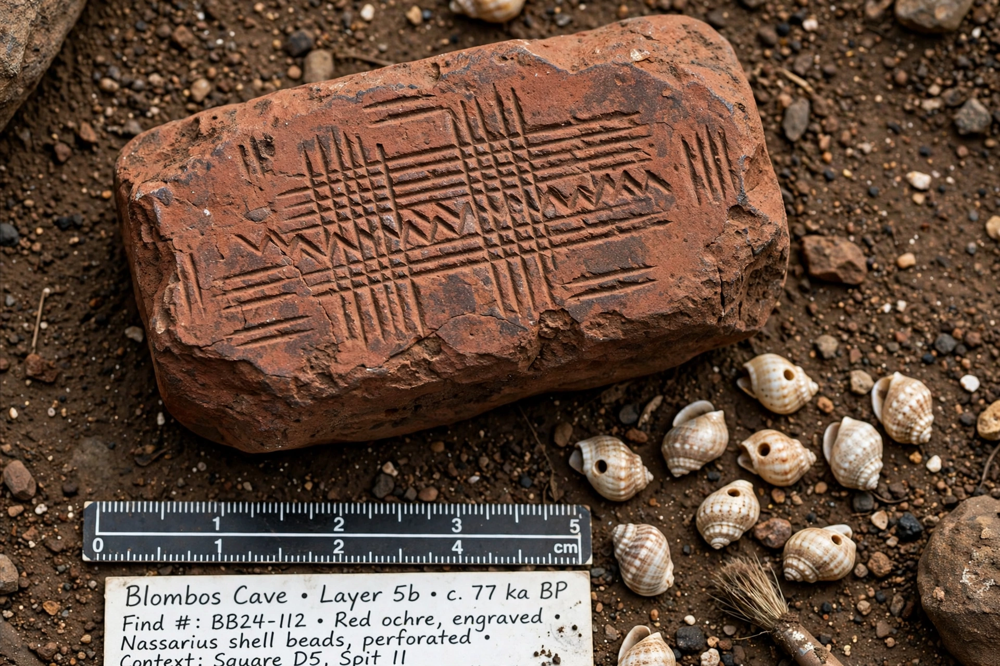

Behavioral modernity

Behavioral modernity is the set of behavioural and cognitive traits that distinguishes anatomically modern Homo sapiens from other archaic humans and primates: abstract thinking, planning depth, symbolic behaviour, art and personal ornament, elaborate toolkits, long-distance exchange, and the rapid cultural diversification seen in the archaeological record.
| Field | Palaeoanthropology, archaeology |
|---|---|
| Key evidence | Symbolic artefacts, burials, blade and bone tools, ochre use, long-distance trade |
| Timing debated | Sudden "revolution" c. 50,000 years ago vs gradual African assembly over 200,000+ years |
The "human revolution" model
Classical accounts pointed to an apparent explosion of innovation in the European Upper Palaeolithic around 40,000–50,000 years ago — cave art, figurines, bone tools, burials with grave goods — and attributed it to a sudden cognitive change, perhaps linked to the emergence of fully modern language.
Gradualist African evidence
African Middle Stone Age sites push many "modern" traits far earlier: engraved ochre and pierced shell beads at Blombos Cave (c. 75,000 years ago), heat-treated stone tools at Pinnacle Point, ochre processing kits, and ostrich-eggshell beads. Sally McBrearty and Alison Brooks argued (2000) that modern behaviour was assembled gradually in Africa over hundreds of thousands of years, and that the European "revolution" reflects migration and preservation rather than a sudden mutation.
Debates
Scholars continue to debate whether behavioral modernity was a package or a mosaic of traits appearing at different times and places, how demography and population density drove innovation and its loss (as in Tasmania), and whether Neanderthals — who also made ornaments, pigments and burials — should be included. The concept remains central to explaining why Homo sapiens spread worldwide and replaced other human lineages.